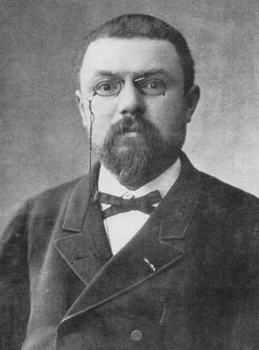

Poincarés förmodan

Poincarés förmodan är ett problem inom algebraisk topologi som handlar om huruvida 3-sfären (en sfär med en 3-dimensionell yta) karakteriseras av sin fundamentalgrupp. Närmare bestämt, till varje sammanhängande topologisk mångfald kan man associera en grupp, fundamentalgruppen. Denna består av ekvivalensklasser av slutna loopar med en viss baspunkt, där två loopar är ekvivalenta om de kontinuerligt kan deformeras till varandra och produkten av två loopar utgörs av deras union. Man kan visa att en n-sfär, alltså mängden av punkter i Rn+1 med avstånd 1 från origo, har en trivial fundamentalgrupp, dvs alla loopar är ekvivalenta. En topologisk mångfald med denna egenskap kallas enkelt sammanhängande. Man kan relativt enkelt visa att en omvändning till detta påstående är sann för n=2, nämligen; Varje kompakt enkelt sammanhängande mångfald av dimension 2 är homeomorf med 2-sfären. Poincaré var troligtvis den första att undersöka detta fenomen för kroppar i tre dimensioner. Den fråga han ställde sig var:
Om en kompakt, enkelt sammanhängande, 3-dimensionell mångfalld M³ har egenskapen att varje enkel stängd kurva på ytan kan deformeras kontinuerligt till en punkt, följer det då att M³ är homeomorf med sfären S³?
Poincarés förmodan lyder:
M³ är homeomorf med S³.
Under 1900-talets andra del visades att motsvarigheten till Poincares förmodan i dimensioner högre än 3 är sann. Dessa resultat är mycket djupa och har belönats med 2 fieldsmedaljer. Detta millennieproblem gäller alltså specifikt för 3 dimensioner. Ett bevis för Poincarés förmodan har presenterats av Dr. Grigorij Perelman. Det Perelman bevisat är Thurstons geometriseringsförmodan som medför ett bevis för Poincarés förmodan. Detta är det första bevis av ett millennieproblem som godkänts och belönats med Millenniepriset, den 18 mars 2010.
Foto: Wikipedia - Dr. Grigorij Perelman till vänster.